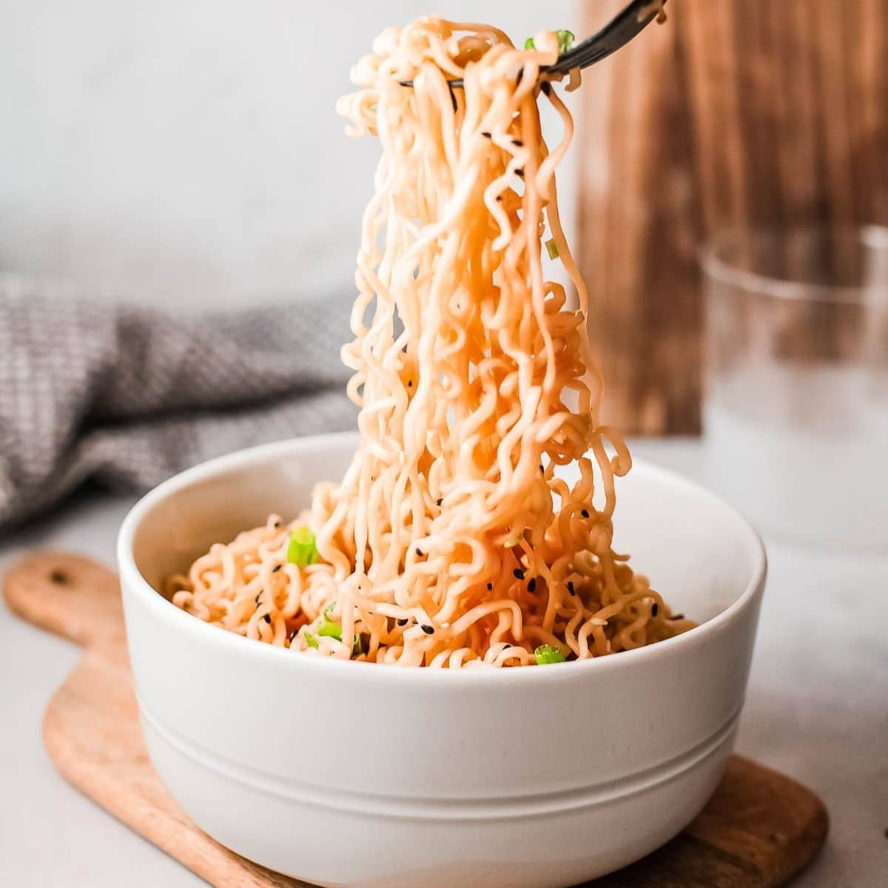

Ramen Noodles

Description
This meal is most commonly found on the closet shelf of broke, desperate college students across the globe.
While priced extremely low, Ramen noodles are a delicacy that is adorned by many due to its' rich taste and effortless preparation.
Ingredientes
- Ramen Noodles
- Water
- Seasoning packet (included with Ramen)
Steps for Preparation
- Fill a saucepan with 3qt water
- Bring water to boil
- Pour Ramen into boiling water
- Let cook for 4-6 minutes
- Strain Noodles (leave some water)
- Put seasoning on cooked noodles
- Stir